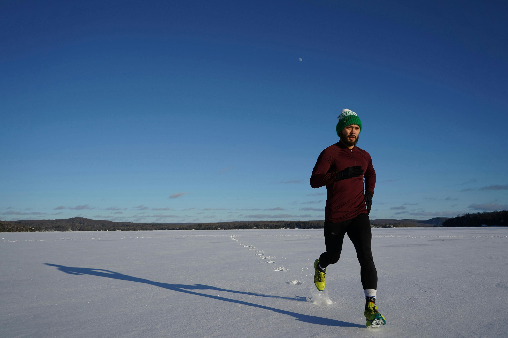
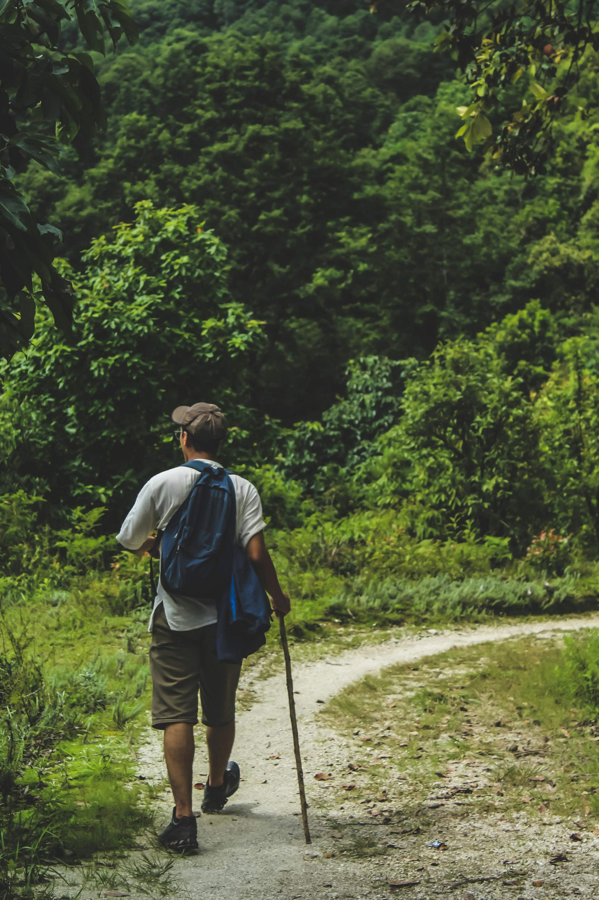

Explore
About
Saved
Log in
Find your outside
Search
Explore nearby trails
450K+
curated trails
80M+
fellow explorers
2.1B+
logged kilometers
Browse by activity
Hiking
Mountain biking

Running
Backpacking

Walking
Road biking
Nahargarh Fort - Charan Mandir via Jai...
Nahargarh Wildlife Sanctuary
4.1 · Moderate · 5.5 km · 1.5–2 hr
Hathni Kund
Nahargarh Wildlife Sanctuary
4.1 · Easy · 2.4 km · 0.5–1 hr
Maila Bagh
Nahargarh Wildlife Sanctuary
4.7 · Moderate · 7.4 km
Amba Mata
Nahargarh Wildlife Sanctuary
4.4 · Moderate · 4.3 km · 1.5–2 hr

 Hiking
Hiking Mountain biking
Mountain biking Backpacking
Backpacking Road biking
Road biking